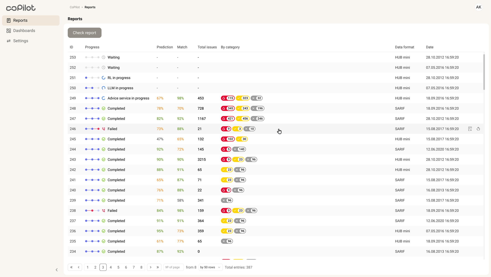
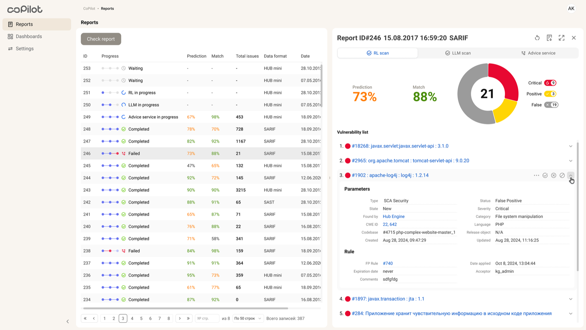
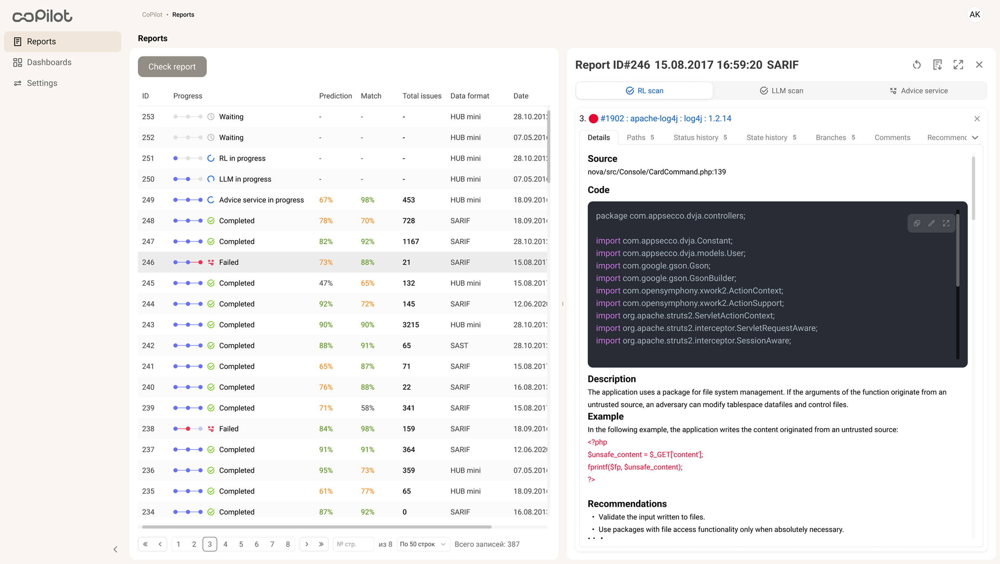
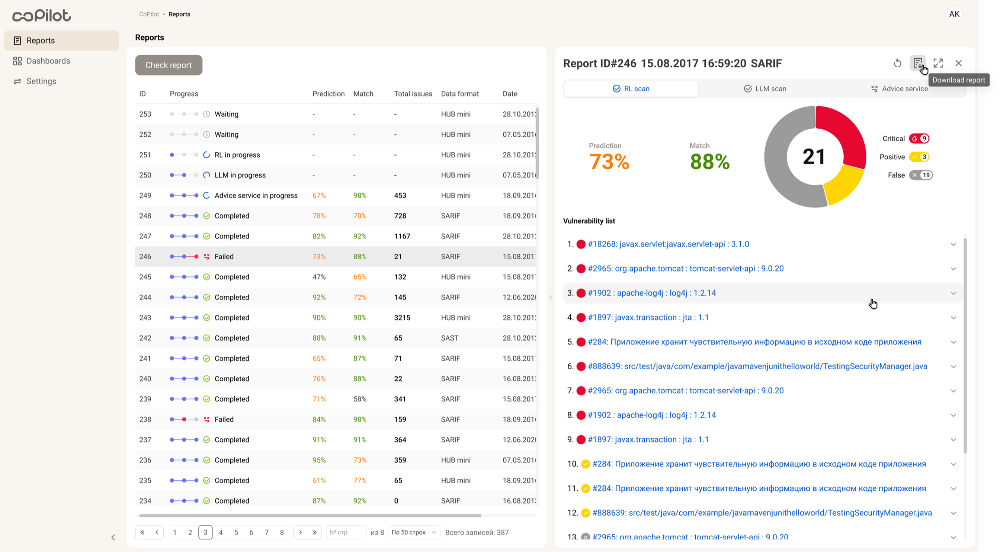

Context
AppSec-команды работали с отчётами, уязвимостями, CWE, source evidence, рекомендациями сервисов и историей решений в разных местах. При сотнях находок это замедляло review и повышало риск случайных решений.AppSec teams worked with reports, vulnerabilities, CWE, source evidence, service recommendations and decision history scattered across different places. With hundreds of findings, this slowed down review and raised the risk of accidental decisions.
Design challenge
Нужно было не добавить ещё один экран с данными, а выстроить порядок принятия решения: что видно сразу, где проверяется рекомендация и какое действие безопасно выбрать.The goal was not to add yet another data screen, but to build an order for decision-making: what is visible right away, where a recommendation is verified and which action is safe to take.

Моя рольMy role
Вела дизайн полного цикла: интервью и наблюдение review-сессий, информационная архитектура, split-screen workspace, сценарии принятия решений и компоненты для security UI. Работала с PM, аналитиками безопасности, DevSecOps и разработкой.I led the full design cycle: interviews and observation of review sessions, information architecture, the split-screen workspace, decision-making scenarios and components for the security UI. I worked with PM, security analysts, DevSecOps and engineering.
ЗадачиGoals
- Разобрать review-цикл AppSec-аналитиков и точки потери контекстаBreak down the AppSec analysts' review cycle and the points where context is lost
- Спроектировать ИА: что видно сразу, а что открывается по запросуDesign the IA: what is visible right away and what opens on demand
- Собрать split-screen workspace со списком отчётов, деталями и действиямиBuild a split-screen workspace with the report list, details and actions
- Показать evidence для доверия к рекомендациям: source, code, rule, CWE и параметрыShow evidence to build trust in recommendations: source, code, rule, CWE and parameters
ПроцессProcess
Я начала с вопроса не «какой экран нарисовать», а «как аналитик приходит к безопасному решению». Для этого разобрала review как цепочку проверок: отчёт, рекомендация, evidence, severity, история решений и финальное действие. AI использовала не вместо исследования, а как рабочий слой между сырыми заметками и дизайн-гипотезами: он помогал быстрее группировать наблюдения, находить повторяющиеся сомнения и превращать их в варианты структуры.I started not with “which screen should we draw”, but with “how does an analyst arrive at a safe decision”. I broke review down as a chain of checks: report, recommendation, evidence, severity, decision history and final action. I used AI not instead of research, but as a working layer between raw notes and design hypotheses: it helped cluster observations faster, spot recurring doubts and turn them into structure options.
Интервью, наблюдение сессий, термины AppSec, состояния отчёта и ручные обходные пути.Interviews, session observation, AppSec terms, report states and manual workarounds.
Группировала заметки, просила AI найти повторяющиеся вопросы аналитиков и проверяла выводы вручную с PM и security-экспертами.I clustered notes, asked AI to find recurring analyst questions and manually checked the output with PM and security experts.
Из процесса стало видно, что решение принимается не в одном блоке, а между тремя опорами: список отчётов, проверяемое evidence и безопасное действие.The process showed that decisions are not made inside one block, but between three anchors: report list, verifiable evidence and a safe action.
Аналитик доверяет рекомендации только тогда, когда может быстро увидеть, почему она появилась и что изменится после действия.Analysts trust a recommendation only when they can quickly see why it appeared and what changes after the action.
РешениеSolution
Split-screen workspace вместо переходов между страницами:A split-screen workspace instead of page-to-page navigation: заменила сценарий список → страница → назад на две панели: отчёты остаются слева, а детали и действия открываются справа. Этот паттерн выбрала после сравнения full-page, drawer и split-screen вариантов.I replaced the list → page → back flow with two panels: reports stay on the left while details and actions open on the right. I chose this pattern after comparing full-page, drawer and split-screen options.

Левая панель / обзор отчётов:Left panel / reports overview: каждая строка показывает прогресс, прогноз, совпадение, число проблем, формат и дату. Аналитик переключается между отчётами, не теряя общий список.each row shows progress, prediction, match, issue count, format and date. The analyst switches between reports without losing the overall list.

Правая панель / детальный анализ отчёта:Right panel / detailed report analysis: детали собирают рекомендации сервисов, severity, список уязвимостей, параметры, rule и triage-действия. После тестирования я сократила вкладки, закрепила severity/status и добавила якоря к находкам.the details bring together service recommendations, severity, the vulnerability list, parameters, rule and triage actions. After testing, I reduced the tabs, pinned severity/status and added anchors to the findings.

РезультатOutcome
- 120+ часов сэкономлено команде и компании в месяц120+ hours saved for the team and the company every month
- Один workspace вместо разрозненных инструментов:One workspace instead of scattered tools: отчёт, детали уязвимости, evidence и действия собраны рядом, поэтому review не распадается на переходы между сервисамиthe report, vulnerability details, evidence and actions sit side by side, so review no longer breaks apart into jumps between services
- Рекомендации стали проверяемыми:Recommendations became verifiable: Severity, CWE, source evidence, rule и параметры находятся рядом с рекомендациями, поэтому решение принимается не вслепуюseverity, CWE, source evidence, rule and parameters sit next to the recommendations, so decisions are no longer made blindly